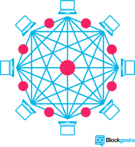

区块链是什么？它能做到什么？
区块链技术是否是一个新的网络？
区块链是一个无可否认的巧妙发明 – 一个由化名Satoshi Nakamoto所知的人或一群人的心血结晶。 但是从那以后，它演变成了更大的东西，每个人都在问一个问题：什么是区块链？
区块链技术通过允许数字信息分发而不复制，创造了一种新型互联网的支柱。 比特币最初是为数字货币而设计的，现在科技界正在寻找技术的其他潜在用途。
比特币被称为”数字黄金”，并有一个很好的理由。 特别是在2017，该货币的与美元的交易价格一路狂飙，到2017年12月7日，与美元交易价格首次突破了15000美元。 区块链可以使其他类型的数字值。 就像互联网（或你的手机）一样，你不需要知道区块链如何使用它。 但是，掌握这项新技术的基本知识将说明为什么它被认为是革命性的。 所以，我希望你喜欢这个，这里是一个”什么是区块链的指南”的文章。本文主要是翻译和摘录了一些比较全面和high level的解释和描述。从相对比较简单易懂的角度来解释一下区块链。
区块链技术是什么
“The blockchain is an incorruptible digital ledger of economic transactions that can be programmed to record not just financial transactions but virtually everything of value.”
区块链是一种经济交易的廉洁数字分类帐，可以编程为记录金融交易，但几乎可以记录任何有价值的内容。
分布式数据库
举个例子，在一个网络存在这一个数千次一摸一样的电子表格的COPY。 然后，这个网络存在的目的是为了定期更新这个电子表格。并且要保证数千份电子表格内容的一致性。任何一处的修改，都会同步到这数千份电子表格中。区块链最简单的解释，差不多就是这样。
在区块链上保存的信息是作为一个共享的分布式数据库内信息，兵器在各个分布式数据库中被调和并且保持一致。 这是使用了网络的明显优势的一种方式。 区块链数据库不存储在任何单一的位置，这意味着它保存的记录是真正公开的并且容易验证。 这个信息并不会集中存储，也不必担心被黑客如何，或者被有系统权限的人任意修改。 这些数据同时托管在数百万台计算机中，互联网上的任何人都可以访问它的数据。这些数据公开，透明，并且安全级别很高。这就是区块链的特点和优势。
为了深入了解Google电子表格的类比，你可以从区块链专家那里阅读并且参考这篇文章。

“The traditional way of sharing documents with collaboration is to send a Microsoft Word document to another recipient, and ask them to make revisions to it. The problem with that scenario is that you need to wait until receiving a return copy before you can see or make other changes because you are locked out of editing it until the other person is done with it. That’s how databases work today. Two owners can’t be messing with the same record at once. That’s how banks maintain money balances and transfers; they briefly lock access (or decrease the balance) while they make a transfer, then update the other side, then re-open access (or update again).With Google Docs (or Google Sheets), both parties have access to the same document at the same time, and the single version of that document is always visible to both of them. It is like a shared ledger, but it is a shared document. The distributed part comes into play when sharing involves a number of people.
Imagine the number of legal documents that should be used that way. Instead of passing them to each other, losing track of versions, and not being in sync with the other version, why can’t all business documents become shared instead of transferred back and forth? So many types of legal contracts would be ideal for that kind of workflow. You don’t need a blockchain to share documents, but the shared documents analogy is a powerful one.”“传统的文档共享是将Word文档发送给其他人，并要求对方各自保存并且做针对性的修改。这种情况下有一个问题。您需要等到收到其他人的回执，才能看到或做出其他更改，因为您已被锁定，无法编辑它，直到其他人完成。这就是数据库今天的工作方式。两个所有者不能一次操作同一个记录。这就是银行如何维持货币余额和转账;他们暂时锁定访问权限（或减少余额），然后更新对方的账户，然后重新打开访问权限（或再次更新）。使用Google文档（或Google表格），双方都可以访问同一文档同时，该文档的单一版本始终对它们都是可见的。它就像一个共享分类账，但它是一个共享文档。当分享涉及许多人时，分布式部分就会起作用。
想象一下应该以这哪一种方式使用的法律合同文件。与其说，将这些文件传递给个个人，导致无法进行版本跟踪和内容更新的总总不便。还不如将这种业务文件进行共享来的方便。对于这种工作流程来说，很多类型的法律合同都是理想的。当然，你不需要区块链来共享文件，共享文件类比是一个的方法。”
区块链的稳定性和健壮性
区块链技术就像互联网一样，它具有内置的稳健性。 通过存储在其网络上相同的信息块，区块链可以做到：
- 不会受到任何单一实体控制，
- 也不担心单点故障。
从事实看到的情况是，比特币自从2008年发明以来，比特币区块链运行时没有受到明显的干扰。 （到目前为止，与比特币相关的任何问题都是由于黑客攻击或管理不善造成的，换句话说，这些问题来自恶意和人为错误，而不是基本概念上的缺陷。
互联网本身已被证明可以持续近30年。 这是一个有利于区块链技术发展的良好记录。
“As revolutionary as it sounds, Blockchain truly is a mechanism to bring everyone to the highest degree of accountability. No more missed transactions, human or machine errors, or even an exchange that was not done with the consent of the parties involved. Above anything else, the most critical area where Blockchain helps is to guarantee the validity of a transaction by recording it not only on a main register but a connected distributed system of registers, all of which are connected through a secure validation mechanism.”
“正如听起来那样具有革命性意义，区块链真正是一个使每个人都能够承担最高责任的机制。 不会出现更多的Transaction方面的错误，以及人为的或者机器方面的错误，甚至没有经过有关各方的同意而进行的交换。 最重要的，区块链能够发挥特长的最关键领域是：数据不再是单独保存在一台主要的服务器上，而是一个连接在网络上的分布式系统的服务器来保证交易的有效性，所有连接到这个网络中的节点，都通过一个安全的验证机制来负责验证。”
透明且无法篡改
区块链网络处于共识状态(status of consensus)，每10分钟自动检查一次。 这个网络是一种数字价值的自我审计生态系统，它同步每隔十分钟发生一次的交易。 这些交易的每一组被称为”块”(Block)。 由此产生两个重要的特性：
- 透明度数据作为一个整体嵌入到网络中，根据定义它是公开的。
- 它不能被破坏，改变区块链上的任何信息单元意味着使用大量的计算能力来覆盖整个网络。– 理论上这可能是可以破坏或者篡改区块链的信息。 实际上，这不太可能发生。 例如，控制系统捕获比特币从而破坏其价值。这意味着你需要控制整个网络上绝大多数的计算力。事实上很难办到。
“Blockchain solves the problem of manipulation. When I speak about it in the West, people say they trust Google, Facebook, or their banks. But the rest of the world doesn’t trust organizations and corporations that much — I mean Africa, India, the Eastern Europe, or Russia. It’s not about the places where people are really rich. Blockchain’s opportunities are the highest in the countries that haven’t reached that level yet.”
“区块链解决了操纵问题。 当我在西方谈论这件事的时候，人们说他们信任Google，Facebook或者他们的银行。 但世界其他国家并不相信组织和公司，我指的是非洲，印度，东欧或俄罗斯。区块链可以发挥极大优势的地方，并不是那些富裕的国家。 它在那些还没有达到这一水平的国家和地区中，更能发挥优势。”
由节点组成的网络
一个个的计算节点组成的网络，构成了整个区块链。

节点
用来执行验证和中继事务的客户端连接到区块链网络的计算机，会获取区块链的副本，区块链在加入区块链网络时自动下载。
这些节点在一起创建了一个强大的二级网络，这一点与我们现在所熟知的互联网运作方式完全不同。
每个节点都是区块链的”管理员”，并自愿加入网络（从这个意义上说，网络是分散的）。 然而，每个人都有参与网络的动机：获得比特币的机会。
我们耳熟能详的是节点可以”挖掘”比特币，但是这个术语有点用词不当。 事实上，每个人都在通过解决计算难题来赢得比特币。 比特币是最初构想的区块链的存在理由。 现在已经认识到这只是该技术许多潜在应用中的第一个。
目前，估计已经有700种类似比特币的加密货币（可交换价值代币）。 此外，原始区块链概念的其他一些潜在适应性目前正在积极或正在开发中。
“Bitcoin has the same character a fax machine had. A single fax machine is a doorstop. The world where everyone has a fax machine is an immensely valuable thing.”
“比特币与传真机具有相同的特征。 一台传真机是门禁。 每个人都有传真机的世界是非常有价值的事情。”
去中心化
在设计角度看，区块链是一种去中心化的技术。
在区块链的网络中，发生的任何事情都会反应在整个网络。 一些重要的含义源于此。 通过创建一个新的方式来验证交易传统的商业方面可能变得没有必要。 例如，股市交易在区块链上变得几乎同时存在，或者可以使记录保持类型（如土地登记）完全公开。 分权已经成为现实。
全球计算机网络使用区块链技术来共同管理记录比特币交易的数据库。 也就是说，比特币是由其网络管理的，而不是任何一个中央机关。 分散化意味着网络以用户到用户（或对等）为基础运行。 这种可能的群众合作形式刚刚开始被调查。
“I think decentralized networks will be the next huge wave in technology.”
“我认为去中心化网络将会成为下一波技术浪潮。”
谁将会使用区块链
作为网络基础设施，您不需要知道区块链是否对您的生活有用。
目前，金融提供了最强大的技术用例。国际汇款，例如。据世界银行估计，2015年有超过4300亿美元的资金转移。目前对区块链开发商的需求很高。
区块链可能会为这些类型的交易越过中间商。随着”桌面”形式的GUI应用的发明，个人计算开始向公众开放。同样，为区块链设计的最常见的GUI应用是所谓的”钱包”应用程序，人们用比特币购买东西，并将其与其他加密货币一起存储。
在线交易与身份验证过程密切相关。不难想象，钱包应用程序将在未来几年转变，包括其他类型的身份管理。
区块链–安全性增强
通过在网络上存储数据，区块链消除了数据集中存在的风险。
它的网络是去中心化的，没有中心化的安全漏洞可以让黑客来利用。今天的互联网有安全问题，每个人都很熟悉。我们都依靠”用户名/密码”系统来保护我们的身份和在线的资产。而区块链安全方法使用加密技术。
这个基础是所谓的公共和私人”钥匙”。一个”公钥”（一个随机生成的长字符串）是用户在区块链上的地址。通过网络发送的比特币被记录为属于该地址。 “私钥”就像一个给其所有者访问比特币或其他数字资产的密码。将数据存储在区块链中，并且是不可破坏的。这确实就是事实，虽然保护您的数字资产也将需要通过打印出来保护您的私钥，创建所谓的纸钱包。
下一代网络 (A second-level network)
通过区块链技术，网络获得了新的功能层。
用户之间可以直接进行交易 – 2016年的比特币交易平均每天超过20万美元。 随着区块链带来的更多安全性，新的互联网业务正在分拆传统的金融机构。
高盛认为，区块链技术具有巨大的潜力，特别是优化清算和结算，可以代表全球每年高达60亿美元的储蓄
“2017 will be a pivotal year for blockchain tech. Many of the startups in the space will either begin generating revenue – via providing products the market demands/values – or vaporize due to running out of cash. In other words, 2017 should be the year where there is more implementation of products utilizing blockchain tech, and less talk about blockchain tech being the magical pixie dust that can just be sprinkled atop everything. Of course, from a customers viewpoint, this will not be obvious as blockchain tech should dominantly be invisible – even as its features and functionality improve peoples’/business’ lives. I personally am familiar with a number of large-scale blockchain tech use cases that are launching soon/2017. This implementation stage, which 2017 should represent, is a crucial step in the larger adoption of blockchain tech, as it will allow skeptics to see the functionality, rather than just hear of its promise.”
“2017年将是区块链技术的关键一年。 这个领域的许多创业公司要么开始创造收入 – 通过提供产品的市场需求/价值，要么由于用完现金而蒸发。 换句话说，2017年应该是利用区块链技术实现更多产品的一年，而区块链技术就是可以洒在所有东西之上的神奇小精灵。 当然，从客户的角度来看，区块链技术应该是不可见的，即使它的功能和功能可以改善人们的生活。 我个人熟悉2017年即将启动的大量区块链技术用例。 这个2017年应该代表的实施阶段，是大规模采用区块链技术的关键一步，因为它可以让怀疑者看到功能，而不是听到它的承诺。”
区块链将成为Web 3.0 吗
区块链使互联网用户能够创造价值和认证数字信息。 新的业务应用程序会产生什么变化?
智能合约 (Smart Contract)
分布式分类账可以实现在满足特定条件时执行的简单合同的编码。 以太坊是一个开源的区块链项目，专门为实现这种可能性而构建。 尽管如此，在早期阶段，以太坊仍然有可能在真正世界级的规模上利用区块链的实用性。
在技术目前的发展水平，智能合约可以编程执行简单的功能。 例如，当金融工具符合某个基准时，可以使用区块链技术和比特币来支付衍生工具，从而实现支付自动化。共享经济
随着Uber, AirBnB, 滴滴打车和共享自行车等公司的蓬勃发展，共享经济已经被证明是成功的。 然而，目前想要乘坐乘车分享服务的用户不得不依赖像滴滴这样的中介。 通过支持点对点支付，区块链为各方之间的直接互动打开了大门 – 真正实现分散的共享经济。
另外一个早期的例子，OpenBazaar使用区块链来创建点对点的eBay。 将应用程序下载到您的计算设备上，您可以与OpenBarzzar供应商进行交易，而无需支付交易费用。 协议的”无规则”精神意味着个人声誉对于企业交互而言将比现在在eBay上更为重要。众筹
像Kickstarter和Gofundme这样的众筹计划正在为新兴的点对点经济做好前期工作。 这些网站的受欢迎程度表明人们希望在产品开发中有直接的发言权。 区块链把这个兴趣提高到一个新的水平，可能创造众筹的风险投资基金。
在2016年，一个这样的实验，即基于以太坊的DAO（分散式自治组织），在两个多月的时间里筹集了惊人的2亿美元。 参与者购买了”DAO Token”，允许他们对智能合约风险投资进行投票（投票权与他们持有的DAO数量相称）。 随后的一系列项目资金证明，这个项目是在没有适当的尽职调查的情况下启动的，后果不堪设想。 无论如何，DAO实验表明，区块链有可能引入”新的经济合作范式”。Governance
通过使结果完全透明和公开，分布式数据库技术可以为选举或任何其他类型的民意调查提供充分的透明度。 以太坊的智能合约有助于实现这一过程的自动化。
这个应用程序，会议室，使组织决策发生在区块链上。 实际上，这意味着在管理数字资产，股权或信息时，公司治理变得完全透明和可验证。供应链审计
消费者越来越想知道，公司对其产品的道德要求是真实的。 分布式账本提供了一个简单的方法来证明我们购买的东西是真实的。 透明度带有基于区块链的日期和位置的时间戳 – 例如对于道德评级 – 与产品编号相对应。
英国的Provenance为一系列消费品提供供应链审计。 利用以太坊区块链，Provenance试点项目确保日本寿司餐厅出售的鱼类在印度尼西亚供应商可持续收获。文件存储
分散在互联网上的文件存储带来明显的好处。 在整个网络中分配数据可以防止文件被黑客入侵或丢失。
Inter Planetary File System（IPFS）可以很容易地概念化分布式网络的运作方式。 类似于Bittorrent在互联网上传输数据的方式，IPFS摆脱了对集中式客户端 – 服务器关系（即当前网络）的需求。 由完全分散的网站组成的互联网有可能加快文件传输和流媒体时间。 这样的改进不仅方便。 这是网络当前超载的内容交付系统的必要升级。市场预测
事件概率预测的众筹被证明具有高度的准确性。 平均意见取消了歪曲判断的未经审查的偏见。 根据事件结果进行支付的预测市场已经很活跃。 区块链是”人群中的智慧”技术，无疑将会在未来几年找到其他应用。
尽管如此，在Beta版中，预测市场应用程序Augur 在现实世界事件的结果上提供了分享产品。 参与者可以通过购买正确的预测来赚钱。 购买正确结果的股票越多，支出就越高。 只需少量资金（少于1美元），任何人都可以提出问题，根据预测结果创建市场，并收取市场产生的一半交易费用。知识产权保护
众所周知，数字信息可以无限复制，并可以通过互联网进行广泛传播。 这为全球网络用户提供了免费内容的金矿。 然而，版权所有者并不那么幸运，因此失去了对知识产权的控制，并因此而遭受经济损失。 智能合约可以保护版权，并在线自动销售创意作品，消除文件复制和再分发的风险。
Mycelia使用区块链创建点对点音乐分配系统。 由英国创作歌手Imogen Heap创立，Mycelia使音乐家能够直接向观众销售歌曲，还可以向制作人许可样品，并向歌曲作者和音乐家分配版税 – 所有这些功能都通过智能合约实现自动化。 区块链以小数加密货币金额（小额支付）发行支付的能力表明，区块链的这种使用情况具有很大的成功机会。物联网
什么是物联网？ 某些类型的电子设备的网络控制管理 – 例如监控存储设备的空气温度。 智能合同使远程系统管理的自动化成为可能。 软件，传感器和网络的组合促进了对象和机制之间的数据交换。 结果提高了系统效率并改善了成本监控。
制造业，科技和电信领域的最大厂商都在争夺物联网的主导地位。 想想三星，IBM和AT＆T。 现有基础架构由现有运营商控制的自然延伸，物联网应用将从机械部件的预测性维护到数据分析，以及大规模自动化系统管理。邻里微电网（Neighbourhood Microgrids）
区块链技术使购买和销售由邻近微电网产生的可再生能源成为可能。 当太阳能电池板产生多余能源时，以太坊智能合约会自动重新分配。 随着物联网成为现实，相似类型的智能合约自动化将具有许多其他应用。
Consensys位于布鲁克林，是全球范围内开发以太坊应用的领先企业之一。 他们合作的一个项目是Transactive Grid，与分布式能源设备LO3合作。 目前正在运行的原型项目使用以太坊智能合约来自动监控和重新分配微电网能源。 这个所谓的”智能电网”是物联网功能的早期例子。身份管理
网络上有更多的身份管理需求。验证身份的能力是在线发生的金融交易的关键。但是，网络商务带来的安全风险的补救措施并不完善。分布式账本提供增强的方法来证明你是谁，以及数字化个人文件的可能性。拥有安全的身份对于在线交互也很重要，例如在共享经济中。毕竟，良好的声誉是在线交易最重要的条件。
发展数字身份标准被证明是一个非常复杂的过程。抛开技术挑战，一个普遍的在线身份解决方案需要私营机构和政府之间的合作除此之外，需要在不同的国家驾驶法律系统，这个问题变得非常困难。互联网上的电子商务目前依靠SSL证书（绿色的小锁）进行网络上的安全交易。 Netki是一家致力于为区块链创建SSL标准的创业公司。最近宣布了一轮350万美元的种子轮，Netki预计在2017年初推出一款产品。反洗钱和知道你的客户（AML and KYC）
反洗钱（AML）和知道你的客户（KYC）的做法有很大的潜力适应区块链。 目前，金融机构必须为每个新客户执行一个劳动密集型的多步骤流程。 通过跨机构客户端验证可以降低KYC成本，同时提高监控和分析效率。
启动Polycoin有一个涉及分析交易的AML / KYC解决方案。 被认定为可疑的交易被转交给合规官。 另一家创业公司Tradle正在开发名为Trust in Motion（TiM）的应用程序。 TiM被称为”KYC的Instagram”，允许客户拍摄关键文件（护照，公用事业账单等）的快照。 一旦被银行验证，这些数据就会密码保存在区块链中。数据管理
今天，为了换取他们的个人资料，人们可以免费使用微博，微信等社交媒体平台。 将来，用户将能够管理和销售其在线活动所产生的数据。 因为它可以很容易地分布在小部分，比特币或类似的东西很可能是用于这种类型的交易的货币。
MIT项目Enigma明白，用户隐私是创建个人数据市场的关键先决条件。 Enigma使用加密技术来允许单个数据集在节点之间进行分割，同时在整个数据组上进行批量计算。 对数据进行碎片化也使得Enigma具有可扩展性（与那些在每个节点上复制数据的区块链解决方案不同）。 测试版本将在未来六个月内发布。
土地所有权登记
作为可公开访问的分类账，区块链可以使各种记录更加高效。 产权是一个恰当的例子。 他们往往容易受到欺诈，以及昂贵的劳动力密集的管理。
一些国家正在开展基于区块链的土地登记项目。 洪都拉斯是第一个在2015年宣布这一倡议的政府，尽管该项目目前的状况尚不清楚。 今年，佐治亚共和国与Bitfury集团达成了一项协议，开发了一个财产权区块链系统。 据报道，高调的经济学家和产权代言人赫尔南多·德索托（Hernando de Soto）将就该项目提供咨询意见。 最近，瑞典宣布正在试验一个区块链应用程序。股票交易
股票结算中增加效率的潜力，为股票交易中的区块链提供了强有力的用例。当执行点对点时，交易确认几乎是瞬间的（而不是三天的交易）。潜在的，这意味着中介机构，如信息交换所，审计师和保管人，将被从流程中移除。
众多股票和商品交易所正在为他们提供的服务（包括澳大利亚证券交易所（ASX），德意志交易所（DeutscheBärse）（法兰克福证券交易所）和JPX（日本交易所集团））提供原型区块链应用。纳斯达克的Linq是私人市场交易的平台（通常是在上市前的创业公司和投资者之间），因此最受瞩目的是该领域公认的先行者。与区块链技术公司Chain，Linq合作宣布完成2015年的第一笔交易。最近，纳斯达克宣布在爱沙尼亚证券交易市场上进行代理投票试行项目。
Sonic Guo